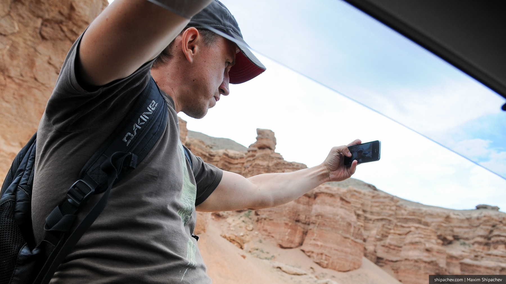

Говорят, отправляясь в путь, не думай, что вернёшься домой прежним. Путешествиями я увлёкся относительно недавно, и для меня они стали самым простым способом расширения сознания из незапрещённых законом.
Путешествие — это, прежде всего, сама дорога. Мы не любим сидеть в путешествии на месте больше 3 дней, и то, если место шибко комфортное, а до этого было совсем не шибко.
Путешествуя по России в 2012 году, мы проехали 12 тысяч километров за 23 дня, нигде не ночуя дважды. За 10 дней в Стамбуле мы сменили 4 гостиницы. Мы просто выходили наутро с рюкзаками и шли искать следующую. Мы забронировали хороший (по нашим меркам) отель в израильском Эйлате, но уехали оттуда, потеряв в деньгах, в противоположную сторону страны на третий день, потому что скучно. В прошлом году мы, «от нечего делать» съездили из Грузии в Турцию. И только в этом, шантажом и дружбой друзья заставили нас сидеть в Иссык-Куле 4 дня.
В отличие от большинства, мне, в смысле путешествий, повезло. Я не очень люблю посещать одно и то же место во второй раз, но каждое своё путешествие я фактически совершаю трижды.
Первый раз — когда подготавливаю его. Честно говоря, это самый простой этап, и часто он проходит во время второго, непосредственно самого путешествия. Сложно где-то ещё получить эмоции, подобные тем, когда в половине одиннадцатого вечера пытаешься найти дешёвый ночлег в Перми, находясь в 100 километрах от Перми. Или, когда в 12 часов ночи уезжаешь из Тюмени в Екатиринбург, потому что дешёвого ночлега не нашлось.
Второй этап — само путешествие. Тут всё как у всех: много ходим, много фотографируем.

Третий этап, в плане расширения кругозора, практически равняется второму, даже порой превосходя его. Это написание отчёта. Эти отчёты я не пишу для кого-то. Я пишу их для себя, путешествуя в третий раз. На описание одного дня часто уходит как раз ещё один день.
Уже сидя в Кемерове я узнал, к примеру, о недвижимой лестнице в Иерусалиме (и нашёл её на своей фотографии) или о том, что самая тяжёлая авария на канатных дорогах произошла в Тбилиси в 90-х годах.
Иногда люди делаю мне замечание, мол нужно брать экскурсовода и не пудрить себе голову. Вот только путешествие с экскурсоводом уже не будет именно моим путешествием, сколько бы сведений из путеводителей экскурсовод ни выдал в свой мегафон.